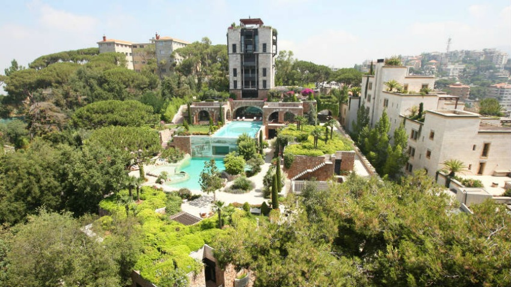

-:The Luxury Hotel:-
Hotel, building that provides lodging, meals, and other services to the traveling public on a commercial basis.
A motel performs the same functions as a hotel but in a format designed for travelers using automobiles.
Inns have existed since very ancient times to serve merchants and other travelers.
In the Roman Empire hostelries called mansiones were situated along the Roman road system to accommodate travelers on government or commercial business.
The commercial revival of the European Middle Ages stimulated a widespread growth of inns and hostels.
Many of these were operated by monastic brotherhoods in order to guarantee haven for travelers in dangerous regions; a famous example is the hostel in the Great St.
Bernard Pass in the Swiss Alps, which was founded in the 10th century by St. Bernard of Montjoux and is still operated by the community of Augustinian monks.
In 13th-century China Marco Polo found an extensive system of relay houses in existence to provide lodgings for travelers and way stations for the Mongol postal service.
Privately operated inns intended primarily for use by merchants were widespread in both Islamic and western European
countries during the later Middle Ages.
The rapid proliferation of stagecoach travel during the 18th century further stimulated the development of inns.
But it was the Industrial Revolution of the 19th century that generated the most progress in innkeeping, especially in England, whose inns became a standard for the world on account
of their cleanliness and comfort.
Meanwhile, American innkeepers were setting a standard for size;
by 1800 the inns of the United States were the largest in the world. The American trend toward large size continued into the 20th century and eventually was adopted by other countries
-:Hotel facility:-